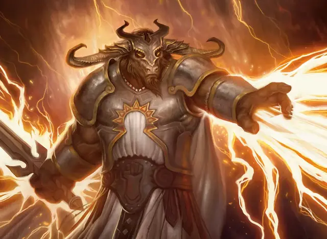

Созидатель
Reckoner
Средний Гуманоид (Любая раса), законно-нейтральный

Класс Доспеха 18 (латы)
Хиты 52 (8к8 + 16)
Скорость 30 футов
| мод | спас | ||
|---|---|---|---|
| СИЛ | 16 | +3 | +3 |
| ЛОВ | 12 | +1 | +1 |
| ТЕЛ | 15 | +2 | +2 |
| мод | спас | ||
|---|---|---|---|
| ИНТ | 15 | +2 | +2 |
| МДР | 12 | +1 | +1 |
| ХАР | 10 | +0 | +0 |
Навыки Восприятие +3, Запугивание +2, Магия +4
Чувства пассивное Восприятие 13
Языки Общий, плюс один другой язык
Опасность 4 (1100 опыта)
Бонус мастерства +2
Особенности
Первый удар. Созидатель совершает броски инициативы с преимуществом.
Использование заклинаний. Созидатель является заклинателем Боросов 5-го уровня. Его базовой характеристикой заклинаний является Интеллект (Сл спасброска от заклинаний 12, +4 к попаданию атаками заклинаниями). У него подготовлены следующие заклинания волшебника:
• Заговоры (неограниченно): защита от оружия [blade ward], свет [light], сообщение [message], электрошок [shocking grasp];
• 1 уровень (4 ячейки): направляющий снаряд [guiding bolt], щит [shield], волна грома [thunderwave], ведьмин снаряд [witch bolt];
• 2 уровень (3 ячейки): размытый образ [blur], левитация [levitate];
• 3 уровень (2 ячейки): молния [lightning bolt].
Действия
Длинный меч. . Рукопашная атака оружием: +5 к попаданию, досягаемость 5 фт., одна цель. Попадание: 7 (1к8 + 3) рубящего урона или 8 (1к10 + 3) рубящего урона при использовании двумя руками.
Реакции
Молниеносный ответный удар (перезарядка 5–6). Когда существо атакует созидателя, атакующий получает урон электричеством, равный половине урона, нанесенного атакой.
Описание
Созидатели Боросов сочетают в себе физическую силу и магическое мастерство, выступая в качестве ударных отрядов легиона. Они умеют разъеденять толпы и организовывать линии обороны. Иногда описываемые как живые грозы, созидатели заряжают свои тела молниями, которые могут взорваться в их заклинаниях и набросится на врагов, которые причиняют им вред. Наибольшее количество созидателей - минотавры.